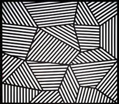
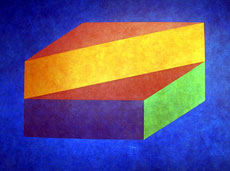
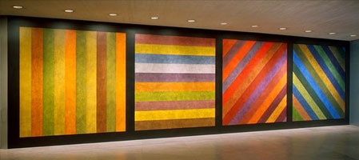
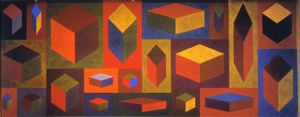
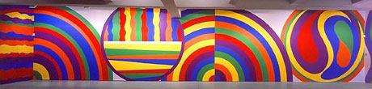
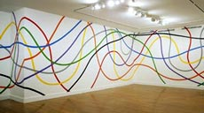

| In the constructivist tradition, many artists derived their works from predefined formal procedures. (Georges Vantongerloo may have been the first. in the 1950's and 1960's it became a common practice: Ellsworth Kelly, François Morellet, Max Bill, Richard Lohse, Karl Gerstner, etc., etc.) in his 1922 "Telephone Pictures", László Moholy Nagy pioneered the idea that constructivist pieces can be specified through a set of verbal instructions, and executed by any technically capable person who understands them. In 1960's minimalism, many artists started to rely on impersonal, industrial production techniques. Constructivism and minimalism thus anticipated some important aspects of algorithmic art generation. Sol LeWitt explicitly connects the constructivist/minimalist tradition with the algorithmic approach. He developed a rich oeuvre of minimalist drawings, paintings and sculptures, but he insisted on the conceptual nature of this work: most of his pieces were based on verbal descriptions, and these were supposed to be the "real" artworks. (Read his "Paragraphs on Conceptual Art" and "Sentences on Conceptual Art".) Note that LeWitt's descriptions are not intended (and not suitable) as autonomous artworks, to be appreciated at the abstraction level of verbal semantics. They only unleash their (often considerable) aesthetic impact when they are actually executed. They thus constitute a rather precise visual analogue of the musical scores of traditional classical composers. LeWitt cites the proto-cinematic photo-sequences of Edweard Muybridge as his most important aesthetic reference point. His work displays a consistent interest in the idea of complete enumeration. (See our page on enumeration art.) |
Wall Drawing #3 (1969) A 40" (100 cm) band of vertical and both sets of diagonal lines superimposed, centered top to bottom, running the length of the wall. |
Wall Drawing #20 (1969) Lines in four directions, each with a different color, superimposed on a wall. |
Wall Drawing #24 (1969) Drawing Series B on aluminum box. One series on each face. |
Wall Drawing #37 (1970) Intersecting symmetrical bands of parallel lines 36" (90 cm) wide, in four directions and colors, on four walls progressively. |
Wall Drawing #38 (1970) Tissue paper cut into 1.5" (4 cm) squares rolled and inserted into holes in gray pegboard walls. All holes in the wall are filled randomly. |
|
Wall Drawing #45 (1970) Straight lines 10" (25 cm) long, not touching, covering the wall evenly. |
Wall Drawing #52 (1970) Four-part drawing with a different line direction in each part. |
Wall Drawing #53 (1970) Serial drawing with lines in three directions (vertical, horizontal, diagonal-left or diagonal-right) and three colors superimposed in each part. |
Wall Drawing #54 (1970) Six-part serial drawing with lines in two directions (vertical, horizontal, diagonal-left or diagonal-right) and two colors superimposed in each part. |
Wall Drawing #65 (1971) Lines not short, not straight, crossing and touching, drawn at random, using four colors, uniformly dispersed with maximum density, covering the entire surface of the wall. |
Wall Drawing #97 (1971) |
|
Wall Drawing #132 A 36 in. (90 cm) grid covering the wall. All two-part combinations of arcs from corners and sides, straight and not straight lines, systematically. 1972 |
Wall Drawing #146 1972 |
Wall Drawing #150 1972 |
Wall Drawing #151 (1973) All combinations of a single line in four directions. (15 parts). |
Wall Drawing #152 (1973) Three-part Drawing: 1st Wall: Straight horizontal lines. 2nd Wall: Not straight horizontal lines. 3rd Wall: Broken horizontal lines. The lines are about two inches (5 cm) apart. |
Wall Drawing #176 (1973) A horizontal line from the left side (more than hal way, less than all the way). |
Wall Drawing #228 (1974) White Circles, Grids and Arcs from Two Opposite Sides of a Gray Wall. |
Wall Drawing #262 (1975) |
Wall Drawing #263 (1975) |
Wall Drawing #264 (1975) |
Wall Drawing #265 (1975) |
Wall Drawing #266 (1975) |
Wall Drawing #267 (1975) |
Wall Drawing #268 (1975) |
Wall Drawing #269 (1975) |
Wall Drawing #270 (1975) |
Wall Drawing #271 (1975) |
Wall Drawing #272 (1975) |
|
Wall Drawing #295 (1976) Six Superimposed Geometric Figures. |
Wall Drawing #356 Isometric figures outlined by three-inch (7.5 cm) bands. Within each plane are three in. (7.5 cm) wide black bands of parallel lines in one of three directions. |
Wall Drawing #356 BB. Isometric figure within which are 3" (7.5 cm) wide black lines in three directions. |
Isometric figures drawn in color and India ink washes, each with a six-inch (15 cm) India ink wash border. |
 Wall Drawing #565 On three walls, continuous forms with alternating 8" (20 cm) black and white bands. The walls are bordered with an 8" (20 cm) black band. |
 Wall Drawing #606. (Realization: 2000.) |
Wall Drawing #552A Tilted forms with color ink washes superimposed. |
||
Wall Drawing #614 Rectangles formed by 3" (7.5 cm) wide India ink bands, meeting at right angles.
|
 Wall Drawing #681 C (1993) |
|
Wall Drawing #746 Identical cubes with color ink washes superimposed on each plane. |
 Wall Drawing #766 (1994) 21 Isometric cubes of varying sizes, each with color ink washes superimposed. |
|
Wall Drawing #752 Continuous forms with an irregular black grid. |
||
Wall Drawing # 811 (1996) Project for Franklin Furnace. A square of 14' divided horizontally into two equal parts. The top half matte black. The bottom half glossy black. |
 Wall Drawing #917 (1999): Arcs and Circles. |
|
Wall Drawing #935 (1999) Color bands in four directions. |
Wall Drawing #936 (1999) Color arcs in four directions. |
Wall Drawing #937 (1999) Various shapes in color. |
Wall Drawing #938 (1999) Flat Top Pyramid.
|
Wall Drawing # 1103 (2003) Color vertical and horizontal broken bands.
|
Wall Drawing #1113 (2003) On a wall, a triangle within a rectangle, each with broken bands of color. |
|
 Wall Drawing #1183 (2005) |
|
|
|